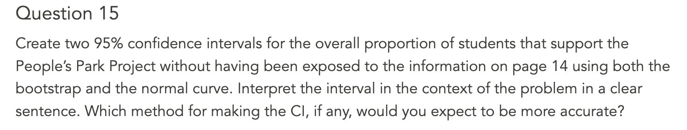
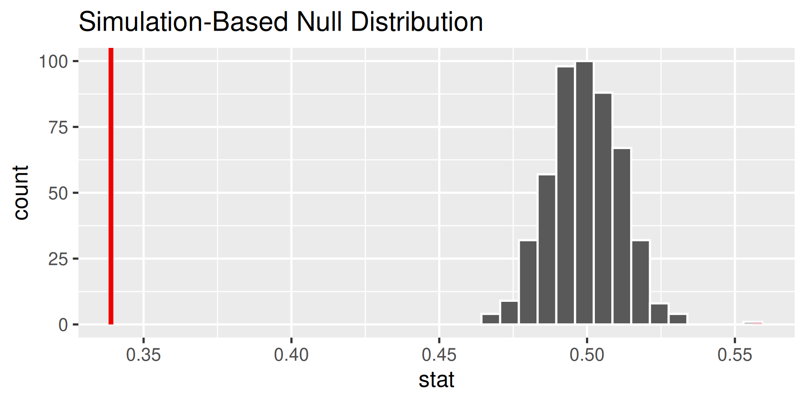

Wrong By Design
Agenda
- Announcements
- Reading Questions: Wrong By Design
- Break
- Worksheet: Wrong By Design
- Break
- Lab 3: People’s Park
Announcements
- Lab 3 (both parts) due tomorrow. You are only required to finish the portions mentioned on Ed.
- Quiz 3 on Thursday.
- Portfolio 6 (Mon., Tue., Wed.) due Friday at 5pm.
Reading Questions
- Please put your laptops under your desk and your phones away.
- Write your name, ID, and bubble in Version “A” on your answer sheet.
- You may work only with those at your table!
Read this first.
A patient named Ana was diagnosed with Fibromyalgia, a long-term syndrome of body pain, and was prescribed anti-depressants. Being the skeptic that she is, Ana didn’t initially believe that anti-depressants would help her symptoms. However, after a couple months of being on the medication she would like to re-evaluates this belief.
00:40
Let Ana’s null hypothesis be that anti-depressants would not help her symptoms. Describe a Type I error.
- A: Deciding that the anti-depressants helped her symptoms when in fact they did not help.
- B: Deciding that the anti-depressants helped her symptoms when they did help.
- C: Deciding that the anti-depressants did not help her symptoms when in fact they did help.
- D: The correct answer is not here.
00:40
Let Ana’s null hypothesis be that anti-depressants would not help her symptoms. Describe a Type II error.
- A: Deciding that the anti-depressants helped her symptoms when in fact they did not help.
- B: Deciding that the anti-depressants did not help when they did not help.
- C: Deciding that the anti-depressants helped her symptoms when they did help.
- D: The correct answer is not here.
00:30
Which of the following is not an upside of a two-tailed (two-sided) hypothesis test as compared to a one-tailed hypothesis test?
- A: A two-tailed hypothesis tests removes “confirmation bias”.
- B: A two-tailed hypothesis test results in a lower p-value than the corresponding one-tailed test.
- C: A two-tailed hypothesis tests helps ensure that we are not inflating the type I error rate.
- D: All of these are upsides.
00:40
Read this first.
A study of 40 California voters failed to find any significant difference in the proportion that supported increased funding for NASA when comparing Republicans to Democrats (that is, the study retained the null hypothesis).
Based on just the information above, which of the statements below do we know is false?
- A: The sample of California voters may have been biased.
- B: The study may have had lower power as a result of the small sample size.
- C: The researchers may have committed a Type I error.
- D. The researchers may have committed a Type II error.
00:40
Break
05:00
Worksheet: Wrong by Design
30:00
Break
05:00
Lab 3: People’s Park
30:00
Concept Questions

Instead of constructing a confidence interval to learn about the parameter, we could assert the value of a parameter and see whether it is consistent with the data using a hypothesis test. Say you are interested in testing whether there is a clear majority opinion of support or opposition to the project.
What are the null and alternative hypotheses?
01:00
Response: support_before (factor)
# A tibble: 1 × 1
stat
<dbl>
1 0.339Response: support_before (factor)
Null Hypothesis: point
# A tibble: 500 × 2
replicate stat
<int> <dbl>
1 1 0.5
2 2 0.512
3 3 0.514
4 4 0.495
5 5 0.481
6 6 0.495
7 7 0.492
8 8 0.492
9 9 0.504
10 10 0.499
# ℹ 490 more rows
What would a Type I error be in this context?
01:00
What would a Type II error be in this context?